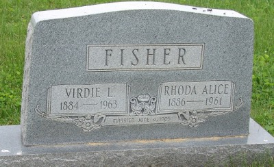

Polsley line · Letart, Mason County, West Virginia
Profile status: SUPPORTED
Quick Facts
Born
15 May 1886, Letart, Mason County, West Virginia DOCUMENTED (West Virginia death certificate; her age 75 years 5 months 24 days at death confirms the date. Tricia's tree gives the birthplace as "Cologne, Mason" — see Research Notes.)
Died
9 November 1961, 5:08 a.m., Mt. State Hospital, Charleston, Kanawha County, West Virginia DOCUMENTED (West Virginia death certificate, WVVRR Id 5587538; cause uremia and starvation secondary to advanced colon carcinoma with metastasis)
Married
Virdie Lee Fisher, 4 June 1905, at the bride's residence, Jackson County, West Virginia DOCUMENTED (marriage license 2 June 1905; ceremony by minister T. M. Casto)
Occupation
None recorded in the records.
Buried
Fairplain Cemetery, Fairplain, Jackson County, West Virginia SUPPORTED (her name stands on the couple's shared headstone at Fairplain; her death certificate's burial field has been read as "Shiloh" and as "Gideon" — see Research Notes)
Named as her parents on her death certificate. Her grandparents were Weston Polsley and Harriett Sophia Rine; any site placing Weston and Harriett as her parents is one generation off.
Spouse
Virdie Lee Fisher (25 February 1884–9 December 1963), married 4 June 1905 DOCUMENTED
Roster follows the 1939 Polsley genealogy. Birth and death years for Burton, Paul, Edwin, and Wilma are contested across the genealogy, Geni, FamilySearch, and Tricia's Ancestry tree — see Research Notes. Georgia's page links here as her parents' page.
Siblings
Full sisters, children of Walter Weston Polsley and Caroline Ridenour:
9 November 1961 · age 75 Died, Mt. State Hospital, Charleston DOCUMENTED
November 1961 Buried, Fairplain Cemetery, Fairplain SUPPORTED
Life Story
Rhoda Alice Polsley was born on 15 May 1886 at Letart in Mason County, West Virginia, the daughter of Walter Weston Polsley and Caroline Ridenour, both named on her death certificate. The family called her Alice, her middle name, and her husband's draft cards name his nearest relative the same way: Alice Fisher of Fairplain.
Her grandfather was Daniel Haymond Polsley, a Wheeling Convention delegate in 1861, West Virginia lieutenant governor, judge, and United States Representative in the 40th Congress — and a slaveowner, stated plainly. The Polsley name itself drifted from Baltzli: a 1913 renaming letter documents the change, and the 1756 Berks County Baltzli twins are the deepest multiples in the family's paper trail.
She married Virdie Lee Fisher on 4 June 1905 at the bride's residence in Jackson County. They lived at Fairplain and Ripley and had eight children, of whom Georgia Mae married Arvel Lawrence Shamblen. Rhoda died on 9 November 1961 at Mt. State Hospital in Charleston, and her name stands with Virdie's on their shared headstone at Fairplain Cemetery. No portrait of Rhoda alone has been found; the photograph above shows her with Virdie late in life.
Photo Gallery

Virdie and Rhoda's shared headstone at Fairplain Cemetery, Fairplain
Sources and Evidence
West Virginia death certificate (WVVRR Id 5587538): Rhoda Alice Fisher, born 15 May 1886, Letart, Mason County; died 9 November 1961, Mt. State Hospital, Charleston; parents Walter Weston Polsley and Caroline Ridenour; burial field read as "Shiloh" DOCUMENTED
Shared headstone, Fairplain Cemetery: "Virdie L. 1884–1963, Rhoda Alice 1886–1961, Married June 4, 1905" SUPPORTED
Marriage record image: license 2 June 1905, married 4 June 1905 at the "Residence of Bride," by minister T. M. Casto; Virdie 21, of Jackson County, Rhoda 19, of Mason County DOCUMENTED
1920 census: Georgia named as the daughter of Virdie and Alice Fisher; the 1939 Polsley genealogy agrees SUPPORTED
Katherine A. Polsley Bryan, 1939 Polsley genealogy: child roster; Rhoda as Walter and Caroline's daughter SUPPORTED
Census trail: Rhoda in Ripley District, Jackson County, 1900, 1910, 1920, and 1930 SUPPORTED
Grades: DOCUMENTED an original record says it · SUPPORTED several records point to it · FAMILY ACCOUNT the family's own telling · UNPROVED a lead, not proved.
Research Notes and Open Questions
Burial naming: her death certificate's burial field has been read as "Shiloh" and as "Gideon," while her name stands on the couple's shared stone at Fairplain Cemetery. No separate Shiloh Cemetery has been found in Jackson County. Resting place Fairplain Cemetery is verified; the naming is unresolved.
Birthplace wording: her death certificate says Letart, Mason County; Tricia's tree gives "Cologne, Mason." The page keeps Letart from the certificate.
Second-wife artifact: FamilySearch lists Rhoda among the children of her father's second wife, Donie Esther Skeen (married 25 December 1895, after Caroline's death). That is a grouping artifact on that site; Rhoda is Caroline's daughter, as her death certificate states.
Her father's second wife's name is spelled "Donie Esther Skeen" in the genealogy and "Donnie Ester Polsley" on Geni; the half-sibling links above use Geni's rendering.
Which child died young: the 1939 genealogy gives the childhood death to Virdie Burton II (19 July 1921, age 9), but Geni, FamilySearch, and Tricia's Ancestry tree all give Burton living to November 1974 and Paul Carroll dying 19 July 1921, which matches Cliff's memory of Paul dying of polio at nine. The page follows the three-site agreement and the genealogy's telling is carried here, unresolved.
Paul's birth year: the folder and Tricia's tree give 14 July 1916; Geni gives 1912. Death 19 July 1921 is agreed.
Edwin's birth: the genealogy and Geni give 1 April 1923; FamilySearch and Tricia's tree give 1920 (11 March 1920). Death is also split: Geni gives 2024, Tricia's tree gives 24 June 1990.
Velma's birth: her headstone and Geni give 1907 (16 March 1907); Tricia's tree gives 1908. Her death 5 January 1999, Charleston, is tree-only.
Wilma's grouping: the genealogy and Geni list Wilma Faye as Virdie and Rhoda's daughter; Tricia's Ancestry tree groups her under Verdie with mother unknown, the other children shown as her half-siblings. The page keeps her as their daughter.
A ninth child, an unnamed infant son born and died 1906, appears on FamilySearch only — UNPROVED, and absent from Geni and Tricia's tree.
Open flag, unproved and unpursued: a Hubert E. Fisher (died 5 November 1961), son of a "Virdie Fisher" and Dollie Humphreys, appears on the same death-record film as Rhoda's certificate. He is listed as this couple's child on no tree site.
Spelling: the records read "Rhoda Alice"; the family called her "Alice." Her husband's draft cards name his nearest relative "Alice Fisher."
No portrait of Rhoda alone has been found. Place photographs in the couple folder (courthouse, river, mansion, locks) are not shown on this page.
Profile history: Created 4 November 2026 from the family couple profile and research notes.
Type your fixes, stories, records, or photos in our shared doc for this generation, under this person's name. We'll update the profile as soon as we can.